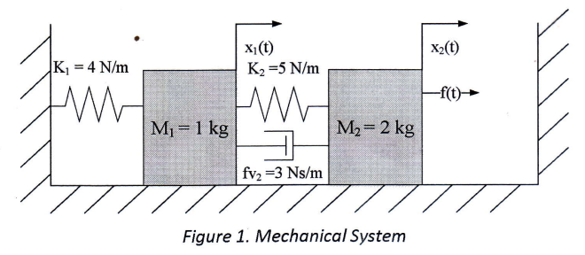
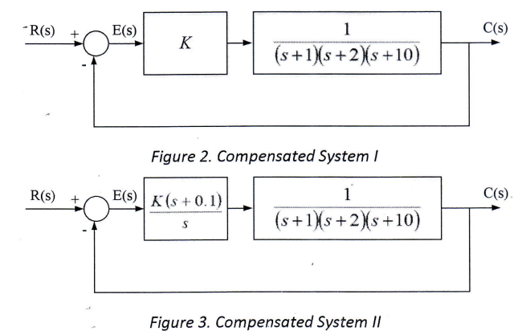
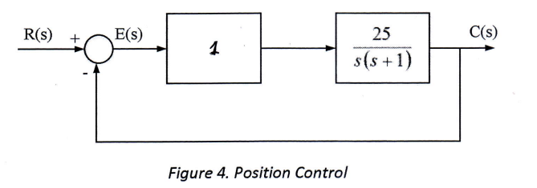
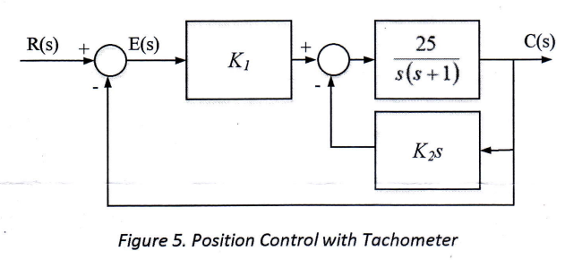

For the system of figure 1, find the transfer function $G(s)=\frac{X_1(s)}{F(s)}$

Problem 1 (Student Outcome : c(25%))
Consider the system in Figure 2 and Figure 3.
Determine the type of compensator within the system of Figure 2, and the damping ratio for the closed loop system and its steady state error if a unit step reference input is applied.
Determine the type of compensator added to the system of Figure 3. Show that the addition of this compensator reduces the steady state error to zero for a unit step reference input without appreciably affecting transient response.

Problem 3 (Student Outcome : c(15%), e(10%))
Assume that motor whose transfer function is shown in Figure 4 is used for forward path of a closed loop, unity feedback system.
Calculate the percent overshoot and settling time that could be expected for system of Figure 4.

You want to improve the response found in part a. Since the motor and motor constant cannot be changed, an amplifier and a tachometer are inserted into the loop, as shown in Figure 5. Find the values of $K_1$ and $K_2$ to yield 16% overshoot and settling time of 0.2 seconds.

Problem 4 (Student Outcome : c(25%))
Find the range of K for which the system of Figure 6 is stable and has two complex poles at the imaginary axis.